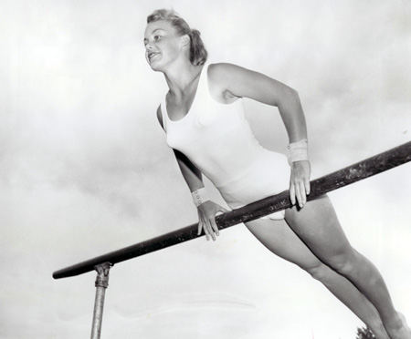

Ernestine Russell (CAN)
1959 Pan American Games AA
Gold Medalist

-
Ernestine was born on June 10, 1938 in Windsor, Ontario, and trained at the Windsor Gymnastics Club with coach Bernard Newman. The Windsor/Essex County Sports Hall of Fame website has more information (including videos and photos) about Ernestine.
Competition Results
- 1953
AAU Championships: 2nd B
1954
Canadian Championships: 1st AA
1955
- AAU Championships: 1st AA, 1st V, 1st UB, 1st B, 1st FX
Canadian Championships: 1st AA
1956
Canadian Championships: 1st AA
Olympic Games:
56th AA
1957
AAU Championships: 3rd AA, 2nd V, 2nd FX
Canadian Championships: 1st AA
Roy E. Moore Meet: 1st AA, 1st V, 1st FX
1958
AAU Championships: 1st AA, 1st V, 1st B, 2nd FX
Canadian Championships: 1st AA, 1st V, 1st UB, 1st B, 1st FX
World Championships: 60th AA
1959
AAU Championships: 1st AA, 1st V, 2nd B, 2nd B, 2nd FX, 4th UB
Canadian Championships: 1st AA, 1st V, 1st UB, 1st B, 1st FX
Pan American Games: 1st Team, 1st AA, 1st V, 1st UB, 1st FX, 2nd B (competing for USA)
1960
Olympic Games:
76th AA
This page was created on September 4, 2011 and was last updated on March 04, 2021.
© Gymn Forum